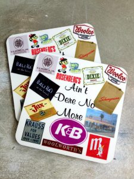

From the archive · Originally published August 29, 2017. This article reflects its original publication period and has not been substantively updated. Laws, procedures, and technology may have changed. Author and contact information are current.
New Orleans is full of old companies and brand names that simply ain’t dere no more. Can someone besides the original company make the old brand come back? Sometimes, the answer is yes, other times, the answer is no. It’s a question of trademark law (click here to read about the difference between patent, trademark, and copyright law), and, more specifically a question of trademark abandonment.

This podcast from Planet Money on NPR discusses what happens when one man decides to try to bring HYDROX cookies back.
View the referenced media
The podcast interviews Ellia Kassoff, the CEO of a company that, among other things, brings back old brands. Before Ellia tried to bring back HYDROX, he wanted to secure trademark rights for the HYDROX brand. However, the HYDROX brand name was still registered, through a series of mergers and acquisitions, by Kellog’s. So, before Ellia could register the HYDROX trademark, he needed to ask the United States Patent and Trademark Office to “cancel” the existing registration. The formal way for him to do that was to file a “Petition for Cancellation” beginning trademark proceedings, similar to a lawsuit, but in the Trademark Trial and Appeal Board (for you lawyers, that’s a non Article III court that generally follows the FRCP). That’s exactly what he did, and he won the fight (although, after looking at the USPTO filings, it’s not really fair to call it a “fight,” as Kellog’s didn’t actually try to stop Ellia).
If you’re interested, you can find a full record of the Trademark Trial and Appeal Board proceedings or just the petition for trademark cancellation, which contains the letter from Kellog’s discussed in the podcast.
And, of course, any post about things that ain’t dere no more wouldn’t be complete without Benny Grunch and the Bunch.